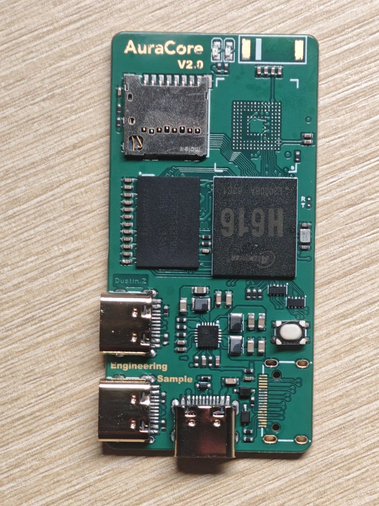
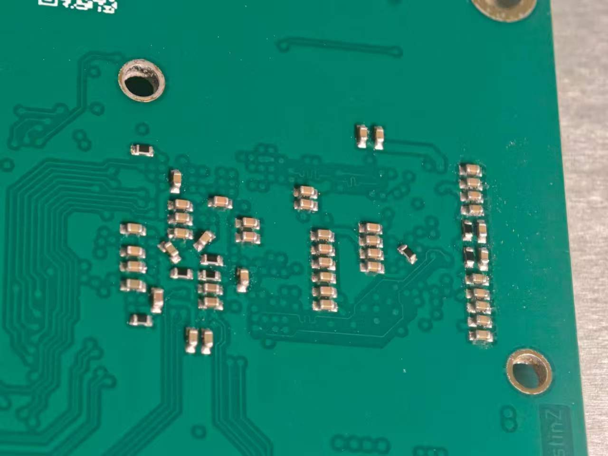

Prefill / Decode 分离
同一张卡既做 Prefill 又做 Decode 时，新请求一到，正在吐字的序列就得停下来。拆到不同节点、用 KV Cache 池（Mooncake）中转，decode 就能匀速输出。切换模式，看 TPOT 和抖动的变化。
- TTFT
- —
- TPOT
- —
- JITTER
- —
- TOK/S
- —
SIMULATION · NOT A BENCHMARK
✳ 你好，我是 Ruimin：画 PCB、编内核、跑大模型的人。
点击画面，投下一滴墨 · CLICK TO DROP INK
↑ 流式生成。悬停任意 token 查看它的（虚构）logprob。
* 超过绝对最大额定值可能导致永久性熬夜。
AuraCore 是我从零画的全志 H616 开发板：原理图、六层 PCB、手工焊接，再配设备树、编 U-Boot、Kernel、Buildroot，直到串口里出现登录提示符。下面是它的简化布局，交给你：把所有焊盘焊上（点击或拖过焊盘），然后上电。
服务器部署、虚拟化、Docker、K8s、软路由——工作里用的东西，先在自己家里折腾一遍。悬停设备看状态，点击发一个包看它怎么走。
底座上有五个竖直的 USB-C 插槽：一片做 head + 路由，四片做从节点，从节点以 USB gadget 以太网接入底座的 CH339F，由 head 做路由，组网跑 k3s。下面是从 EasyEDA 导出的真实 3D 模型：拖动旋转、滚轮缩放，按 ASSEMBLE 看它们插上去。
| AuraCore V2.0 | |
|---|---|
| SoC | Allwinner H616 · 4× Cortex-A53 |
| DRAM | DDR3 · 单颗 x16 · 512 MB |
| Storage | 4 GB eMMC + microSD |
| Wireless | RTL8821CU · Wi-Fi 5 / BT |
| PMIC | AXP313A |
| I/O | 3× USB-C · HDMI · FEL |
| PCB | 6 层 · 31 × 60 mm |
| Cluster Base | |
| Hub | CH339F · USB Hub + Ethernet |
| Slots | 5× 竖直 USB-C · 1 head + 4 workers |
| Power | DC-in · SY8113B · 每槽储能 |
| Stack | USB gadget 以太网 → head 路由 → k3s |


本职工作：在国产算力上部署、调优大模型。四个小实验。
同一张卡既做 Prefill 又做 Decode 时，新请求一到，正在吐字的序列就得停下来。拆到不同节点、用 KV Cache 池（Mooncake）中转，decode 就能匀速输出。切换模式，看 TPOT 和抖动的变化。
百卡级集群的抽象切片：每格一张卡，亮度是利用率。触发 AllReduce，听一次集合通信沿环跑过 12 个节点；悬停读单卡状态。
hover a card…
存量接口千千万，不该为每个智能体重写一遍适配。工具平台读取接口描述，自动生成 MCP Tool 定义，并统一注册、鉴权与分发。（示例接口均为虚构）
纯向量检索答不了“这个 IP 背后是谁”。把情报写进图谱，让智能体在图库、向量库、关系库之间路由。拖拽节点；“六度扩展”会从攻击者逐跳展开。
还没做完、但每周都在推进的几件事。
下一块板：瑞芯微 RK3576，目标做到 38 × 38 mm，冲着那颗 6 TOPS NPU 跑端侧推理，把本职工作里的推理塞进一张邮票大小的板子。嘉立创六层免费工艺 + 盘中孔。
基于 Berkeley Humanoid Lite（BHL）在家手搓：关节已打印装好，正在调驱动器；步态用强化学习在 MJX（MuJoCo + JAX）里训练。下面是一个程序化的小玩具：拖动训练进度，看它从摔跤到走路；点击画面给它一脚。
关节用的是 BHL 的 5010 摆线减速器，3D 打印。我写了 cadquery 脚本，只重建和电机接触的两个件（Motor Shell / Motor Shaft），把它适配到手头的 5010 360KV 电机上，其余打印件不动。驱动器自研 FOC，正在选型画板。拖动转速，看摆线盘怎么“摆”。
自己画板：ZYNQ-7010 + AD936x，学射频前端和 FPGA 上的数字信号处理。业余无线电呼号 BH3FWY。下面的瀑布图里藏着几个模拟信号，拖动或滚轮调台，开着声音能“听”到它们。其中一个是摩尔斯信标，在反复拍发一串呼号，你能解出来吗？
tuning…
从推理往上游走：学习训练和微调。选一个 LoRA 秩开始训练，看 loss 曲线和学习率调度（warmup + cosine）。
idle
从手机相册里翻出来的原始片段，没剪辑、没调色，点击放大。
复刻 ToanTech/py-apple-quadruped-robot ↗：3D 打印腿部结构、舵机驱动、步态调试。我的第一台“会走”的机器人。
ORB-SLAM3 单目定位 + MiDaS ↗ 单目深度估计补出稠密深度，再交给 EGO-Planner 做避障规划。也在仿真里跑了 swarm 编队。
三个 60 mm 全向轮 + 42 步进电机，GD32F103 主控、LV8731V 驱动，自己做运动学和 ROS 串口协议，挂上 YDLIDAR X2 建图。源码 ↗
功率估小了，芯片过载，当场冒出火光。失败也是数据：从这以后，我画板子一定先算功耗、留余量、加保护。
从原声吉他入门，现在玩电吉他、日式摇滚；钢琴还在学。下面两件乐器都能弹：吉他标准调弦（EADGBE），用 Karplus-Strong 算法实时合成拨弦，打开 DRIVE 就是失真音箱；钢琴用加法合成。先打开声音。
本职那条主线。点击提交展开 diff。
+ 百卡级昇腾 NPU 集群与 PPU 一体机运维调优：HCCL 组网与通信调优、容器化资源调度、扩容网络架构设计
+ vLLM / MindIE 私有化部署 DeepSeek、Qwen、Embedding / Reranker、MinerU 等 10+ 款模型，新模型一周内完成验证与压测准入
+ 定位多机多卡通信瓶颈；Mooncake PD 分离 + W8A8 量化 + 算子优化 → 并发延迟 −20%，资源利用率 +25%
+ 集团级智能体平台 K8s 运维 + Prometheus / Grafana 告警，累计 1000 万+ 人次、零重大事故
+ 主导自研 MCP 工具平台：REST → MCP 自动转换，统一注册、鉴权与分发
- “部署模型就是 docker run 一下”的天真想法
+ 负责社交产品资料场景端到端多模态审核大模型（图片 + 文本，3 条业务线）的数据与效果迭代
+ 以人审 / 质检不一致为信号挖掘 badcase，定向采集并加权；个人产出 3.5W+ 训练样本，支撑按日迭代
+ 模型准确率 75% → 98%；推动“模型全量质检人审”，大盘准确率 92% → 97%
+ Graph + Vector 混合 RAG：自然语言 → Cypher 查询威胁图谱，再经向量检索生成；后演进为 ReAct 多数据源路由
+ 智能体长短期记忆：对话缓冲 + 语义召回；长期记忆由 LLM 摘要固化为文档跨会话加载
+ 威胁情报 API 封装、公有云资源接入、Docker 化 + GitHub Actions 自动构建
+ 全国软件设计大赛总决赛一等奖 · 发明专利（共同第一发明人）· 软件著作权
+ 全国软件设计大赛一等奖 · 创新创业大赛省级银奖 · 省级工科竞赛三等奖
+ 一等奖学金 · CET-6
PING dreaming66 (github.com): 56 data bytes
联系方式不在此公开 · 去 GitHub 找我，或在终端里输入 sudo hire-me